4.8 Organic Chemistry Carboxylic Acids · Topic 15C and 15D
Carboxylic acids, acyl chlorides, esters and polyesters
4.8 Organic Chemistry Carboxylic Acids · Topic 15C and 15D
本页严格按 Pearson Edexcel International Advanced Level Chemistry specification 的 15C: Carboxylic acids 和 15D: Carboxylic acid derivatives 编排，主要依据项目内的 4.8 Organic Chemistry Carboxylic Acids.pdf.pdf。解释采用中文，专业词汇保留 English，便于和 specification、reaction conditions 及 exam wording 对照。
Learning objectives
学完本章后，你应该能够：
- name carboxylic acids、acyl chlorides 和 esters，并画 structural、displayed 和 skeletal formulae；
- explain hydrogen bonding 对 carboxylic acids 的 boiling temperature 和 solubility 的影响；
- prepare carboxylic acids by oxidation of primary alcohols / aldehydes and hydrolysis of nitriles；
- describe carboxylic acid 与 LiAlH4、bases、PCl5 和 alcohols 的 reactions；
- explain acyl chloride 与 water、alcohols、concentrated ammonia 和 amines 的 reactions；
- compare acidic and alkaline hydrolysis of esters；
- explain condensation polymerisation 形成 polyesters，例如 Terylene / PET。
15C.1 Carboxylic acids and nomenclature
Carboxyl functional group
Carboxylic acids 含有 carboxyl functional group \(\ce{-COOH}\)，general formula 可写成 \(\ce{RCOOH}\)。Naming pattern 是 alkan + oic acid：
- \(\ce{HCOOH}\)：methanoic acid；
- \(\ce{CH3COOH}\)：ethanoic acid；
- \(\ce{CH3CH2COOH}\)：propanoic acid。
Carboxyl carbon 永远是 carbon 1，因此名称中通常不需要 locant。常见 historical names 也可能出现，例如 methanoic acid = formic acid，ethanoic acid = acetic acid。
考试中要能在 molecular formula、structural formula、displayed formula 和 skeletal formula 之间转换。

15C.2 Physical properties
Hydrogen bonding and boiling temperature
Carboxylic acids 有两个 polarised bonds：\(\ce{C=O}\) 和 \(\ce{O-H}\)。其中 \(\ce{O-H}\) 使 molecules 之间形成 strong hydrogen bonds，有时还会形成 hydrogen-bonded dimers。
因此，相对分子质量相近的 organic compounds 中，carboxylic acids 通常有 relatively high melting temperatures 和 boiling temperatures。它们的 intermolecular forces 包括：
- hydrogen bonding；
- permanent dipole-dipole interactions；
- London forces。
Solubility in water
Short-chain carboxylic acids 可以与 water 形成 hydrogen bonds，因此通常 soluble in water。Hydrocarbon chain 变长后：
- non-polar chain 破坏 water-water hydrogen bonds；
- chain 本身不能提供足够强的 hydrogen bonding；
- hydrophobic part 的影响逐渐超过 carboxyl group 的 hydrophilic effect。
所以 solubility 随 chain length 增加而下降。含有超过约 eight carbon atoms 的 carboxylic acids 在 room temperature 通常是 solids，并且在 cold water 中 only slightly soluble。
15C.3 Preparation of carboxylic acids
Oxidation of primary alcohols and aldehydes
Oxidation to a carboxylic acid
Primary alcohols 和 aldehydes 都可以被 oxidised 为 carboxylic acids。常用 conditions：
- acidified potassium dichromate(VI)，\(\ce{K2Cr2O7 / H2SO4}\)；或
- acidified potassium manganate(VII)，\(\ce{KMnO4 / H+}\)；
- heat under reflux，使 volatile organic compounds 不会逸出并可继续 oxidation。
两步可写成：
\[ \ce{RCH2OH + 2[O] -> RCOOH + H2O} \]
\[ \ce{RCHO + [O] -> RCOOH} \]
Dichromate(VI) 的 orange \(→\) green colour change，或 manganate(VII) 的 purple \(→\) colourless change，可作为 oxidising agent 被还原的 evidence。

Hydrolysis of nitriles
Converting a nitrile group to a carboxyl group
Nitrile hydrolysis 会把 terminal \(\ce{-CN}\) 转换为 \(\ce{-COOH}\)，因此 chain 中 carbon number 增加一个。可以使用：
Dilute acid route
\[ \ce{RCN + 2H2O + HCl -> RCOOH + NH4Cl} \]
生成 carboxylic acid 和 ammonium salt。
Dilute alkali route：先形成 carboxylate salt 和 ammonia，再 acidification：
\[ \ce{RCN + NaOH + H2O -> RCOO^-Na^+ + NH3} \]
\[ \ce{RCOO^-Na^+ + HCl -> RCOOH + NaCl} \]

15C.4 Reactions of carboxylic acids
Weak-acid behaviour
Carboxylic acids 在 water 中只 partial ionisation，因此是 weak acids：
\[ \ce{RCOOH(aq) <=> RCOO^-(aq) + H+(aq)} \]
Equilibrium position lies to the left，\([\ce{H+}]\) 相对较小，但仍足以与 carbonates 和 hydrogencarbonates 反应并释放 carbon dioxide。
与 sodium hydrogencarbonate 的 ionic equation：
\[ \ce{RCOOH + HCO3^- -> RCOO^- + CO2 + H2O} \]
Observation 是 effervescence / fizzing of \(\ce{CO2}\)；这可用于检验 carboxylic acid。

Reduction with lithium tetrahydridoaluminate(III)
Lithium tetrahydridoaluminate(III)，也称 lithium aluminium hydride，formula \(\ce{LiAlH4}\)，在 dry ether (ethoxyethane) 中将 carboxylic acids reduced 为 primary alcohols：
\[ \ce{RCOOH + 4[H] -> RCH2OH + H2O} \]
例如：
\[ \ce{CH3CH2COOH + 4[H] -> CH3CH2CH2OH + H2O} \]
Reaction 后加入 water 可 destroy excess LiAlH4。这里的 \(\ce{[H]}\) 是 reducing equivalent，不是要求实际加入的 free hydrogen atom。
Reactions with bases and formation of salts
Carboxylic acids 与 bases 发生 neutralisation，形成 carboxylate salts：
\[ \ce{RCOOH + NaOH -> RCOO^-Na^+ + H2O} \]
与 metal oxide 反应还可生成 salt 和 water；与 reactive metal 可生成 salt 和 hydrogen；与 carbonate / hydrogencarbonate 生成 salt、water 和 carbon dioxide。
例如：
\[ \ce{2CH3COOH + MgO -> (CH3COO)2Mg + H2O} \]
\[ \ce{2CH3COOH + Na2CO3 -> 2CH3COONa + H2O + CO2} \]
Reaction with phosphorus(V) chloride
Carboxylic acid 与 solid phosphorus(V) chloride（\(\ce{PCl5}\)）反应，\(\ce{-OH}\) 被 chlorine 替代，生成 acyl chloride：
\[ \ce{CH3CH2COOH + PCl5 -> CH3CH2COCl + POCl3 + HCl} \]
Observation 是 steamy fumes of hydrogen chloride。Liquid products 可用 fractional distillation 分离。
Esterification with alcohols
Carboxylic acid 与 alcohol 在 concentrated sulfuric acid catalyst 下发生 esterification，形成 ester 和 water。这是 condensation reaction，通常需要 heat / reflux：
\[ \ce{RCOOH + R'OH <=>[H2SO4] RCOOR' + H2O} \]
Ester name 的 first part 来自 alcohol，second part 来自 carboxylic acid：
- propan-1-ol + ethanoic acid \(→\) propyl ethanoate；
- ester 通常有 sweet / fruity smell。

15D.1 Acyl chlorides and esters
Naming carboxylic acid derivatives
Acyl chloride 是 carboxylic acid 的 \(\ce{-OH}\) 被 chlorine 替代后的 derivative，general formula \(\ce{RCOCl}\)。Naming 使用 parent chain + -oyl chloride：
- ethanoic acid \(→\) ethanoyl chloride；
- propanoic acid \(→\) propanoyl chloride；
- butanoic acid \(→\) butanoyl chloride。
Ester 的 general formula 是 \(\ce{RCOOR'}\)，其中 carbonyl-containing part 来自 acid，\(\ce{-OR'}\) part 来自 alcohol。命名为 alkyl alkanoate，例如 ethyl propanoate。
Acid anhydrides 也属于 carboxylic acid derivatives，但本 Topic 的 assessed nomenclature focus 是 acyl chlorides 和 esters。


Nucleophilic addition-elimination
Acyl chlorides 很 reactive，因为 \(\ce{Cl^-}\) 是 good leaving group。反应通常经历 nucleophilic addition-elimination：
- nucleophile 的 lone pair attack carbonyl carbon；
- carbonyl \(π\) bond electrons move to oxygen，形成 tetrahedral intermediate；
- carbonyl re-forms，同时 \(\ce{Cl^-}\) 被 eliminated；
- proton transfer 生成 final product 和 HCl / ammonium salt。
这套 mechanism 适用于 acyl chloride 与 water、alcohol、ammonia 和 amines 的 reactions。
15D.2 Reactions of acyl chlorides
Hydrolysis with water
Acyl chloride 与 water rapidly hydrolyses，形成 carboxylic acid 和 hydrogen chloride：
\[ \ce{RCOCl + H2O -> RCOOH + HCl} \]
例如：
\[ \ce{CH3CH2COCl + H2O -> CH3CH2COOH + HCl} \]
这是 nucleophilic addition-elimination reaction；通常会观察到 acidic fumes / solution。

Reaction with alcohols: ester formation
Acyl chloride 与 alcohol 反应形成 ester，并 eliminate HCl：
\[ \ce{RCOCl + R'OH -> RCOOR' + HCl} \]
例如：
\[ \ce{CH3CH2COCl + CH3CH2OH -> CH3CH2COOCH2CH3 + HCl} \]
与 carboxylic acid + alcohol 的 esterification 相比，acyl chloride reaction 更 reactive，通常不需要 concentrated acid catalyst。

Reaction with ammonia and amines: amide formation
Acyl chloride 与 concentrated ammonia 反应，生成 primary amide：
\[ \ce{RCOCl + 2NH3 -> RCONH2 + NH4Cl} \]
其中一个 ammonia molecule 是 nucleophile，另一个 neutralises HCl。
与 primary amine \(\ce{R'NH2}\) 反应，生成 N-substituted amide：
\[ \ce{RCOCl + 2R'NH2 -> RCONHR' + R'NH3Cl} \]
例如 propanoyl chloride 与 methylamine 形成 N-methylpropanamide。

15D.3 Hydrolysis of esters
Acid hydrolysis
Ester hydrolysis 是 esterification 的 reverse reaction。With dilute acid（例如 dilute \(\ce{H2SO4}\) 或 \(\ce{HCl}\)），heat under reflux：
\[ \ce{RCOOR' + H2O <=>[dilute\ acid] RCOOH + R'OH} \]
Reaction 是 reversible，建立 equilibrium，通常不会 go to completion。Products 是 carboxylic acid 和 alcohol。

Alkaline hydrolysis / saponification
With dilute alkali（例如 aqueous \(\ce{NaOH}\)），heat under reflux：
\[ \ce{RCOOR' + NaOH -> RCOO^-Na^+ + R'OH} \]
Reaction 是 effectively irreversible，可 go to completion。Product 是 sodium carboxylate salt 和 alcohol；如果要得到 free carboxylic acid，需要再 acidification：
\[ \ce{RCOO^-Na^+ + HCl -> RCOOH + NaCl} \]
这个 alkaline ester hydrolysis 也叫 saponification。

Acid vs alkaline ester hydrolysis
| Feature | Acid hydrolysis | Alkaline hydrolysis |
|---|---|---|
| Conditions | dilute acid, heat, reflux | dilute alkali, heat, reflux |
| Reaction direction | reversible equilibrium | effectively irreversible |
| Organic products | carboxylic acid + alcohol | carboxylate salt + alcohol |
| Further treatment | no required acidification | acidification gives carboxylic acid |
写 equation 时要看题目是 asking for direct product under alkaline conditions，还是 asking for the carboxylic acid after acidification。

15D.4 Condensation polymerisation: polyesters
Diol + dicarboxylic acid
Condensation polymerisation 是许多 monomers 通过 repeated condensation reactions 连接，生成 polymer，同时每次 linkage 形成时 eliminate a small molecule，通常是 water。
要形成 polyester，需要：
- a diol，有 two \(\ce{-OH}\) groups；
- a dicarboxylic acid，有 two \(\ce{-COOH}\) groups。
例如 ethane-1,2-diol 与 benzene-1,4-dicarboxylic acid（terephthalic acid）形成 poly(ethylene terephthalate)，即 PET，也称 Terylene / Dacron。Monomers 通过 ester links 连接。


PET formation and repeating unit
PET formation is a condensation process：每形成 one ester link，就 lose one molecule of water。Drawing polymer structure 时要：
- 找出两个 monomers 的 functional groups；
- remove \(\ce{-OH}\) from carboxylic acid 和 one H from alcohol；
- join carbonyl carbon to oxygen，形成 \(\ce{-COO-}\) ester link；
- 在 polymer chain 两端使用 continuation bonds，并用 square brackets / \(n\) 表示 repeating unit。

Hydroxycarboxylic acid monomer
也可以使用一个 molecule 同时带有 alcohol group 和 carboxylic acid group 的 hydroxycarboxylic acid。例如 2-hydroxybutanoic acid 既有 \(\ce{-OH}\) 又有 \(\ce{-COOH}\)，能够 self-condense，形成含 ester links 的 polyester，并在每次 condensation 时 eliminate water。

Unit 4 Past-paper practice
以下为 2021–2026 年 Unit 4A / Unit 4AA 中对应 15C: Carboxylic acids 和 15D: Carboxylic acid derivatives 的真题。题干保留原题信息；答案隐藏，按对应 mark scheme 列出得分点。题图从 `extracted_figures/*/adjusted` 独立提取。
2021 Jan · U4A Q17 This question is about carboxylic acids and their derivatives.
(a) Lactic acid, \(\ce{CH3CH(OH)COOH}\), is produced in muscles as a result of anaerobic respiration.

(a)(i) Give a reason why lactic acid shows optical isomerism. (1)
(a)(ii) A laboratory sample of lactic acid does not rotate the plane of plane-polarised monochromatic light. Give a reason for this observation. (1)
(a)(iii) Give the structure of the organic product formed when lactic acid reacts with concentrated phosphoric(V) acid, \(\ce{H3PO4}\). (1)
(b) A reaction scheme involving butanoic acid is shown.
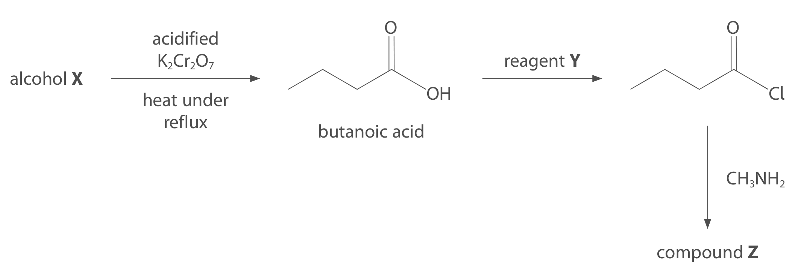
Identify X, Y and Z by name or formula. (3)
(c) The repeat unit of a polyester is shown.
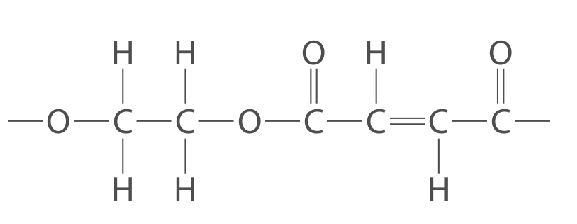
Give the structures of the two monomers that could form this polyester. (2)
(d)(i) An organic compound E contains carbon, hydrogen and oxygen only. E contains five carbon atoms and gives a molecular ion peak at \(m/z=102.0678\). Deduce the molecular formula of E. (1)
(d)(ii) Aqueous sodium hydrogencarbonate is added to a sample of E. No effervescence occurs. State what can be deduced. (1)
(d)(iii) The infrared spectrum of E has an absorption in the range 1750–1735 cm\(^{-1}\). Name the functional group in E. (1)
(d)(iv) Data from the high resolution proton NMR spectrum of E are shown.
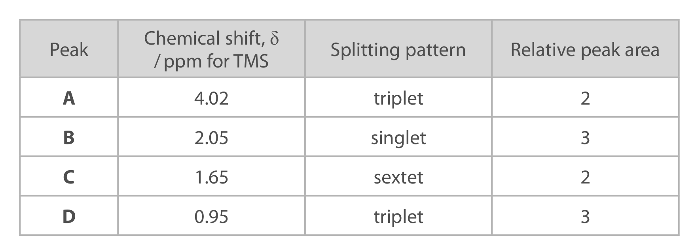
| Peak | Chemical shift / ppm for TMS | Splitting pattern | Relative peak area |
|---|---|---|---|
| A | 4.02 | triplet | 2 |
| B | 2.05 | singlet | 3 |
| C | 1.65 | sextet | 2 |
| D | 0.95 | triplet | 3 |
Deduce the structure of E. Justify your answer by labelling the protons responsible for each peak. (3)
Markscheme-based answer · 得分点
- Lactic acid has a carbon atom attached to four different groups. [1]
- A racemic mixture contains equal amounts of the two enantiomers, so their rotations cancel. [1]
- Concentrated \(\ce{H3PO4}\) dehydrates lactic acid to form \(\ce{CH2=CHCOOH}\) (propenoic acid). [1]
- \(X\) is butan-1-ol; \(Y\) is \(\ce{PCl5}\); \(Z\) is N-methylbutanamide. [3]
- The monomers are ethane-1,2-diol and butenedioic acid (the displayed alkene dicarboxylic acid structure). [2]
- Formula \(\ce{C5H10O2}\); no \(\ce{-COOH}\) group; absorption is \(\ce{C=O}\); NMR is consistent with pentyl ethanoate, \(\ce{CH3COOCH2CH2CH2CH3}\). [3]
2021 May · U4A Q17 This question is about an ester, Y, with the molecular formula \(\ce{C8H16O2}\).
(a) Y contains 66.7% carbon, 11.1% hydrogen and 22.2% oxygen by mass. Show that these data are consistent with its molecular formula. (2)
(b) The structure of compound Y is shown.
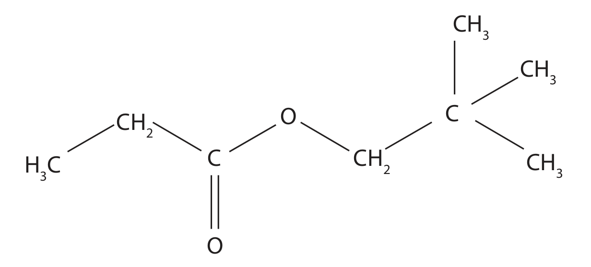
(b)(i) Give the IUPAC name of Y. (2)
(b)(ii) Draw the structures of two organic compounds that would react together to form Y. (1)
(c)(i) Label the three remaining hydrogen environments B, C and D on the structure. (1)
(c)(ii) Complete the table.
| Hydrogen environment | Splitting pattern of peak | Relative peak area |
|---|---|---|
| A | triplet | 3 |
| B | ||
| C | ||
| D |
(3)
Markscheme-based answer · 得分点
- Percentage composition calculated from \(\ce{C8H16O2}\) agrees with the data. [2]
- (b)(i) 2-methylbutyl 2-methylpropanoate. [2]
- (b)(ii) 2-methylpropanoic acid and 2-methylbutan-1-ol. [1]
- Correctly label the three remaining environments; splitting follows the \(n+1\) rule and the relative areas account for all 16 H atoms. [4]
2022 Oct · U4A Q17 This question is about reactions of carboxylic acids and their derivatives.
(a) Molecule A reacts in two ways in the presence of an acid catalyst. Reaction 1 is intramolecular, in which one molecule of A forms a cyclic ester B. Reaction 2 is intermolecular, in which a condensation polymer C forms.
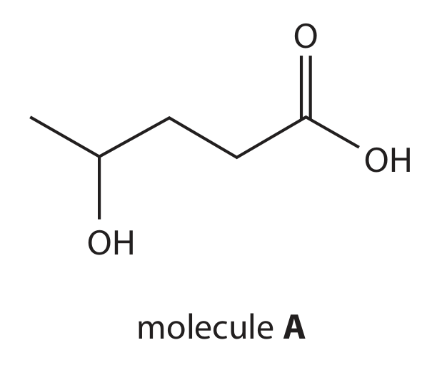
(a)(i) Draw the structure of the cyclic ester B. (1)
(a)(ii) Draw the structure of the condensation polymer C, showing two repeat units. (2)
(a)(iii) Explain why the entropy change of the system, \(\Delta S_\mathrm{system}\), is greater for Reaction 1 than for Reaction 2. (2)
(b) The molecule shown is a triester, used as a food additive.
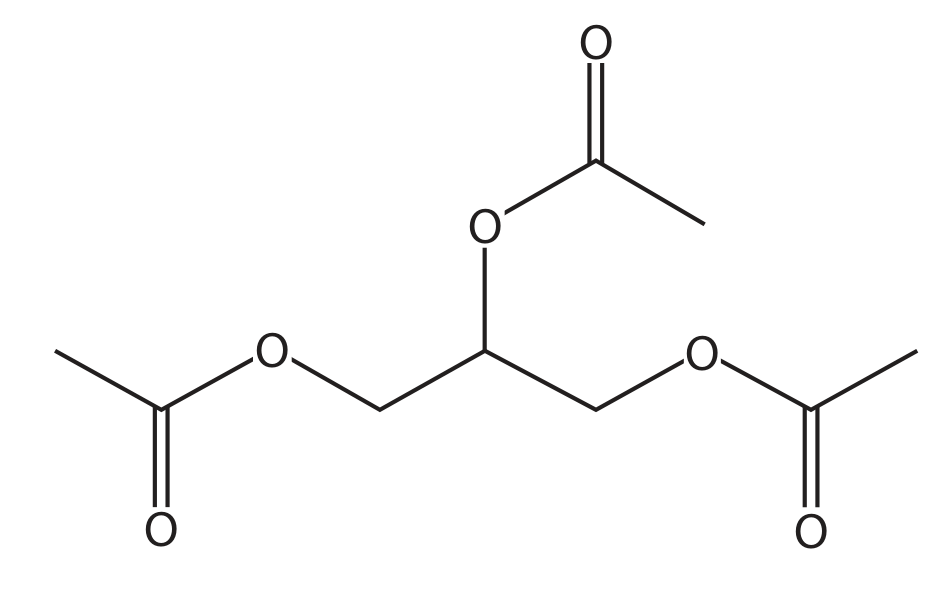
(b)(i) Give the molecular formula of this triester. (1)
(b)(ii) Complete the equation for the alkaline hydrolysis of this triester with excess aqueous sodium hydroxide, showing the structures of the products. (3)
(c) Some reactions of ethanoyl chloride, \(\ce{CH3COCl}\), are shown.
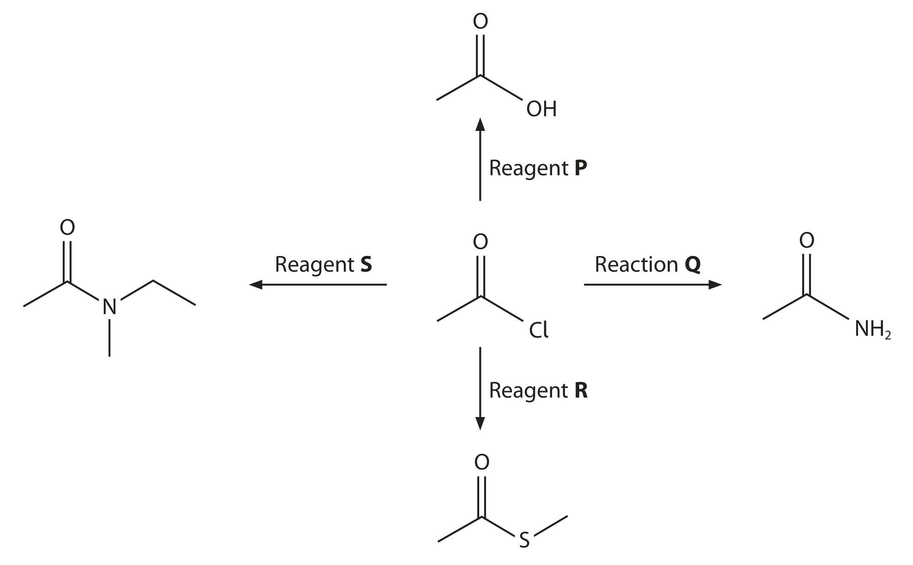
Identify reagent P, reagent R, reagent S and reaction Q. (4)
Markscheme-based answer · 得分点
- Intramolecular esterification forms the cyclic ester; intermolecular condensation forms the polyester. [3]
- Reaction 1 gives a larger positive entropy change because one molecule remains one molecule, whereas Reaction 2 joins molecules and reduces the number of particles. [2]
- Triester formula and alkaline hydrolysis products must conserve atoms; the products are the triol plus three sodium carboxylates. [4]
- \(P\) is water, \(R\) is methanethiol, \(S\) is a secondary amine (ethylmethylamine), and Reaction Q uses concentrated ammonia to form ethanamide. [4]
2024 Jan · U4A Q19 Ethyl propanoate, \(\ce{CH3CH2COOCH2CH3}\), smells of pineapple and is used as a flavouring.
(a) Explain why ethyl propanoate is only slightly soluble in water. (2)
(b) Ethyl propanoate can be prepared by reacting propanoic acid with ethanol.
(b)(i) State the name of the type of reaction. (1)
(b)(ii) State the name of the catalyst used. (1)
(b)(iii) State the essential reaction conditions. (1)
(c) A sample of ethyl propanoate is hydrolysed with aqueous sodium hydroxide. Write the equation and state the organic products. (3)
(d) Explain why the alkaline hydrolysis of an ester is effectively irreversible whereas acid hydrolysis is reversible. (3)
Markscheme-based answer · 得分点
- Ethyl propanoate has only one ester group able to accept hydrogen bonds, while the ethyl/propyl hydrocarbon parts are non-polar. [2]
- Esterification; concentrated sulfuric acid; heat under reflux. [3]
- \(\ce{CH3CH2COOCH2CH3 + NaOH -> CH3CH2COONa + CH3CH2OH}\); sodium propanoate and ethanol. [3]
- Alkaline hydrolysis forms a carboxylate ion/salt that does not readily react back with the alcohol; acid hydrolysis forms the carboxylic acid and remains an equilibrium. [3]
2024 May · U4A Q17 This question is about carboxylic acids and their derivatives.
(a) There are five carboxylic acids with the formula \(\ce{C4H6O2}\). Four are structural isomers. One of these structural isomers has two stereoisomers.
(a)(i) Name the two structural isomers shown. (2)
(a)(ii) The third structural isomer has two stereoisomers. Draw these stereoisomers. (2)
(a)(iii) Draw the fourth structural isomer. (1)
(b) Some reactions involving 3-hydroxy-3-methylbutanoic acid, \(\ce{(CH3)2C(OH)CH2COOH}\), are shown.
(b)(i) Give the reagents and conditions for Reaction 1. (1)
(b)(ii) Write the equation for Reaction 2. State symbols are not required. (2)
(b)(iii) Give the structure of the organic product formed in Reaction 3. (2)
(b)(iv) Give the structure of the organic product formed in Reaction 4. (1)
Markscheme-based answer · 得分点
- Structural isomers and stereoisomers must conserve \(\ce{C4H6O2}\) and show the correct carboxyl group. [5]
- Reaction 1: acidified \(\ce{K2Cr2O7}\) or \(\ce{KMnO4}\), heat under reflux. [1]
- Reaction 2: \(\ce{(CH3)2C(OH)CH2CN + 2H2O + HCl -> (CH3)2C(OH)CH2COOH + NH4Cl}\). [2]
- Reaction 3: the corresponding acyl chloride, \(\ce{(CH3)2C(OH)CH2COCl}\). [2]
- Reaction 4: the corresponding primary amide, \(\ce{(CH3)2C(OH)CH2CONH2}\). [1]
2024 Oct · U4A Q16 An ester, X, with the molecular formula \(\ce{C8H16O2}\) has the structure shown.
(a) Give the IUPAC name of X. (2)
(b) X is hydrolysed using dilute aqueous sodium hydroxide. Write the equation for the reaction and give the name of the organic product. (3)
(c) X is hydrolysed using dilute sulfuric acid. State the names of the two organic products and explain why the reaction is reversible. (3)
(d) Explain why X has a lower boiling temperature than the carboxylic acid formed by its hydrolysis. (2)
Markscheme-based answer · 得分点
- Name must match the displayed ester structure. [2]
- Alkaline hydrolysis gives the sodium carboxylate and an alcohol; acid hydrolysis gives the carboxylic acid and alcohol. [6]
- Acid hydrolysis is reversible because the products can react to reform the ester; the acid has stronger intermolecular hydrogen bonding and therefore the higher boiling temperature. [2]
2025 Jan · U4A Q17 Esters are difficult to distinguish from each other using chemical tests, so NMR spectroscopy is often used.
(a) There are four ester isomers with molecular formula \(\ce{C4H8O2}\). Their displayed formulae are shown.
(a)(i) Explain which of the four esters can be distinguished from the other three by the numbers of peaks in the carbon-13 NMR spectra. (2)
(b) There are nine ester isomers with molecular formula \(\ce{C5H10O2}\).
(b)(i) Explain how the peaks with relative area 3 in the low-resolution proton NMR spectra can be used to distinguish esters W and X. (2)
(b)(ii) Label the displayed formulae of two different esters Y and Z to show the ester with the triplet in its proton NMR spectrum. (2)
(b)(iii) Draw the displayed formula of the \(\ce{C5H10O2}\) ester which has only 2 peaks in its low-resolution proton NMR spectrum. (2)
Markscheme-based answer · 得分点
- Count chemically non-equivalent carbon environments; the ester with the unique symmetry pattern has fewer \(^{13}\)C NMR peaks. [2]
- Use the splitting pattern of the area-3 signal: a triplet indicates \(\ce{CH3CH2-}\), while a singlet indicates \(\ce{CH3CO-}\). [2]
- Correctly identify Y/Z from the triplet environment and draw the symmetric ester with two proton environments. [4]
2022 Jan · U4A Q21 Esters are used in flavourings and perfumes. They can be made by reactions involving alcohols.
(a) A flask containing a mixture of 0.200 mol of ethanoic acid and 0.150 mol of ethanol was left at 25 °C, in the presence of a catalyst, until equilibrium had been established.
[ ]
The ethanoic acid present in the equilibrium mixture required 34.8 cm³ of a 2.50 mol dm⁻³ solution of sodium hydroxide for complete neutralisation.
(a)(i) Calculate the value of the equilibrium constant, \(K_c\), for this reaction at 25 °C. (4)
(a)(ii) The enthalpy change for this reaction is small. Explain, by reference to the type and number of bonds being broken and made, how this might have been predicted. (2)
(b) An ester which smells of raspberries can be formed by either of two different reactions.
Reaction 1: \(\ce{HCOOH + (CH3)2CHCH2OH <=> HCOOCH2CH(CH3)2 + H2O}\)
Reaction 2: \(\ce{HCOCl + (CH3)2CHCH2OH -> HCOOCH2CH(CH3)2 + HCl}\)
(b)(i) Name the carboxylic acid, alcohol and catalyst used in Reaction 1. (2)
(b)(ii) Explain one advantage and one disadvantage of using Reaction 2 rather than Reaction 1. (4)
Markscheme-based answer · 得分点
- At equilibrium, \(n(\ce{CH3COOH})=0.0870\) mol, \(n(\ce{CH3COOC2H5})=n(\ce{H2O})=0.113\) mol and \(n(\ce{C2H5OH})=0.0370\) mol; \(K_c=\dfrac{0.113^2}{0.0870\times0.0370}=4.0\). [4]
- The same types and numbers of bonds are broken and made, so the energy changes approximately cancel. [2]
- Reaction 1: methanoic acid, 2-methylpropan-1-ol and concentrated sulfuric acid. [2]
- Advantage of Reaction 2: fast, no heating/catalyst, and/or goes to completion giving a higher yield. Disadvantage: hydrogen chloride is corrosive/toxic and requires suitable equipment/fume cupboard. [4]
2022 May · U4A Q18 Compare and contrast the reactions of ethanoyl chloride with water, with ethanol and with ammonia. Refer to the structural features of the molecules that determine the type of reaction. Identify the products of the reactions. You may include equations in your answers. (6)
Markscheme-based answer · 得分点
- In all three reactions, a lone pair on the nucleophile attacks the δ⁺ carbon atom of ethanoyl chloride and chloride is lost. [2]
- With water, ethanoic acid forms: \(\ce{CH3COCl + H2O -> CH3COOH + HCl}\). [1]
- With ethanol, ethyl ethanoate forms: \(\ce{CH3COCl + CH3CH2OH -> CH3COOCH2CH3 + HCl}\). [1]
- With ammonia, ethanamide forms; excess ammonia gives ammonium chloride: \(\ce{CH3COCl + 2NH3 -> CH3CONH2 + NH4Cl}\). [1]
- The reactions are vigorous/fast and do not require a catalyst. [1]
2022 May · U4A Q19 This question is about methanoic acid and propanoic acid.
(a) 25.00 cm³ of 0.150 mol dm⁻³ aqueous methanoic acid was pipetted into a conical flask. Potassium hydroxide was added from a burette while measuring the pH. The titration curve is shown.
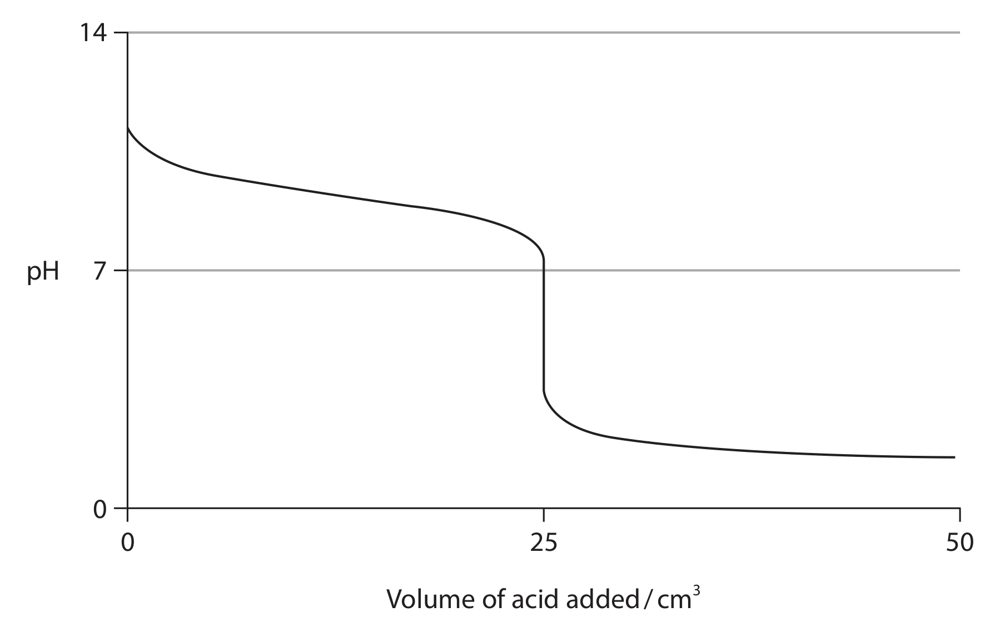
(a)(i) Complete the equation for the reaction taking place in this titration. State symbols are not required. (1)
(a)(ii) Calculate the concentration of the potassium hydroxide solution, using your equation in (i) and the titration curve. (2)
(a)(iii) Use the titration curve to determine a value for the acid dissociation constant, \(K_a\), of methanoic acid. (3)
(b) A student prepared a buffer by mixing together equimolar aqueous solutions of propanoic acid, \(\ce{CH3CH2COOH}\), and sodium propanoate, \(\ce{CH3CH2COONa}\). The acid dissociation constant for propanoic acid is \(1.3\times10^{-5}\) mol dm⁻³. Calculate the volume ratio of propanoic acid to sodium propanoate needed to produce a buffer solution with a pH of 4.6. (2)
Markscheme-based answer · 得分点
- \(\ce{HCOOH + KOH -> HCOOK + H2O}\). [1]
- Read the equivalence volume as about 22.0 cm³ and use \(c_1V_1=c_2V_2\) to obtain \(c(\ce{KOH})=0.170\) mol dm⁻³. [2]
- At half-neutralisation, \(\mathrm{pH}=\mathrm{p}K_a\); read the graph and calculate \(K_a\) (approximately \(1.8\times10^{-4}\)). [3]
- From Henderson–Hasselbalch, \(\mathrm{pH}=\mathrm{p}K_a+\log([\ce{A-}]/[\ce{HA}])\); the required acid:salt volume ratio is about \(1:5.6\). [2]
2025 Oct · U4AA Q15 Butanedione, \(\ce{CH3COCOCH3}\), has two carbonyl groups. It can be reduced to butane-2,3-diol.
(a) Complete the equation for this reduction of butanedione. (2)
(b) Suggest what you would see when this reaction occurs. (1)
(c) Explain which compound has the higher boiling temperature. (2)
(d) Explain the type of stereoisomerism shown by butane-2,3-diol. (2)
(e)(i) Identify three differences in the esterification reaction when propanoyl chloride is used instead of propanoic acid. (3)
(e)(ii) Draw the skeletal formula of the ester produced when butane-2,3-diol reacts with excess propanoic acid. (2)
(f) Give two differences between the infrared spectra of butanedione and butane-2,3-diol. Include wavenumbers and the bonds responsible. Use your Data Booklet. (2)
(g) Complete both the high-resolution \(^1\)H NMR spectrum and the \(^{13}\)C NMR spectrum for butanedione. Include the relevant hydrogen atoms and carbon atoms responsible for the peaks. Use your Data Booklet. (3)
Markscheme-based answer · 得分点
- \(\ce{CH3COCOCH3 + 4[H] -> CH3CHOHCHOHCH3}\). [2]
- The yellow-green colour disappears/goes colourless. [1]
- Butane-2,3-diol has hydrogen bonding, requiring more energy to overcome. [2]
- It shows optical isomerism because of chiral carbon atoms and non-superimposable mirror images. [2]
- Compared with propanoic acid, propanoyl chloride reacts irreversibly, produces HCl rather than water, and is fast at room temperature without an acid catalyst. [3]
- The product is the diester of butane-2,3-diol and propanoic acid. [2]
- Butanedione has a strong \(\ce{C=O}\) absorption near 1725–1700 cm⁻¹; butane-2,3-diol has a broad \(\ce{O-H}\) absorption near 3750–3200 cm⁻¹ and no carbonyl absorption. [2]
- Complete the spectra with the correct equivalent environments and chemical shifts for butanedione. [3]
2026 May · U4AA Q16 Ethyl propanoate can be prepared in the laboratory using Reaction 1 or Reaction 2. Reaction 1 uses ethanol and propanoic acid. Reaction 2 uses ethanol and propanoyl chloride. Comment on the differences between these reactions. Include an equation for each reaction. (6)
Markscheme-based answer · 得分点
- Reaction 1 requires a strong acid catalyst and heating; it is reversible and has a lower yield. \(\ce{C2H5OH + C2H5COOH <=> C2H5COOC2H5 + H2O}\). [3]
- Reaction 2 occurs at room temperature without an acid catalyst, is effectively irreversible, and produces corrosive/toxic HCl. \(\ce{C2H5OH + C2H5COCl -> C2H5COOC2H5 + HCl}\). [3]
Unit 4 multiple-choice bank · 15C / 15D
以下 MCQ 只保留 2021–2026 年相关题目；每道题均有完整 A–D 选项，答案隐藏并附 explanation。
2021 Oct · U4A Q13 Butanoic acid may be prepared by the acid hydrolysis of
A butyl ethanoate
B 1-chlorobutane
C ethyl butanoate
D propanenitrile
Show answer · 答案 + explanation
Answer: A. Acid hydrolysis of butyl ethanoate forms butanoic acid and ethanol.
2021 Oct · U4A Q14 Terylene is a polyester derived from ethane-1,2-diol and terephthalic acid. What is the structure of the repeat unit of Terylene?
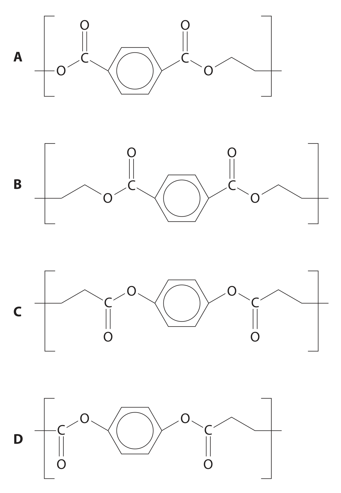
Show answer · 答案 + explanation
Answer: B. The repeat unit must contain the terephthalate ring joined to \(\ce{-OCH2CH2O-}\) by ester links, with continuation bonds at both ends.
2021 Oct · U4A Q15 The formation of esters and the hydrolysis of esters are slow under normal laboratory conditions. What speeds up these reactions?
| Esterification | Hydrolysis | |
|---|---|---|
| A | acids only | acids only |
| B | acids only | acids or alkalis |
| C | acids or alkalis | acids only |
| D | acids or alkalis | acids or alkalis |
Show answer · 答案 + explanation
Answer: B. Esterification is acid-catalysed; hydrolysis can be acid-catalysed or base-promoted.
2022 Jan · U4A Q15 Which of these compounds is a product of the hydrolysis of \(\ce{CH3COOC3H7}\) by refluxing with aqueous sodium hydroxide?
A propan-1-ol
B propanoic acid
C sodium ethanoate
D ethanoic acid
Show answer · 答案 + explanation
Answer: C. Alkaline hydrolysis gives sodium ethanoate and propan-1-ol.
2022 May · U4A Q5 Which reaction cannot form a carboxylic acid?
A oxidation of a primary alcohol
B acidic hydrolysis of a nitrile
C alkaline hydrolysis of an ester
D an acyl chloride reacting with water
Show answer · 答案 + explanation
Answer: C. Alkaline ester hydrolysis directly gives a carboxylate salt; acidification is required to obtain the free acid.
2024 Oct · U4A Q13 Ethanoyl chloride reacts with ammonia, forming ethanamide. Which equation is correct?
A \(\ce{CH3COCl + NH3 -> CH3CONH2 + HCl}\)
B \(\ce{CH3COCl + 2NH3 -> CH3CONH2 + NH4Cl}\)
C \(\ce{CH3COCl + 2NH3 -> CH3CONH2 + NH4OH}\)
D \(\ce{CH3COCl + NH3 -> CH3CONH2 + NH4Cl}\)
Show answer · 答案 + explanation
Answer: B. One ammonia molecule attacks; the second neutralises HCl to form \(\ce{NH4Cl}\).
2025 Jan · U4A Q1 Which reducing reagent is used to convert carboxylic acids to alcohols?
A \(\ce{NaBH4}\)
B \(\ce{LiAlH4}\)
C \(\ce{H2/Ni}\)
D acidified \(\ce{K2Cr2O7}\)
Show answer · 答案 + explanation
Answer: B. \(\ce{LiAlH4}\) reduces carboxylic acids to primary alcohols under dry ether conditions.
2025 Jan · U4A Q2 A polyester is made from pentane-1,5-diol and pentanedioic acid. Which is the repeat unit of this polyester?
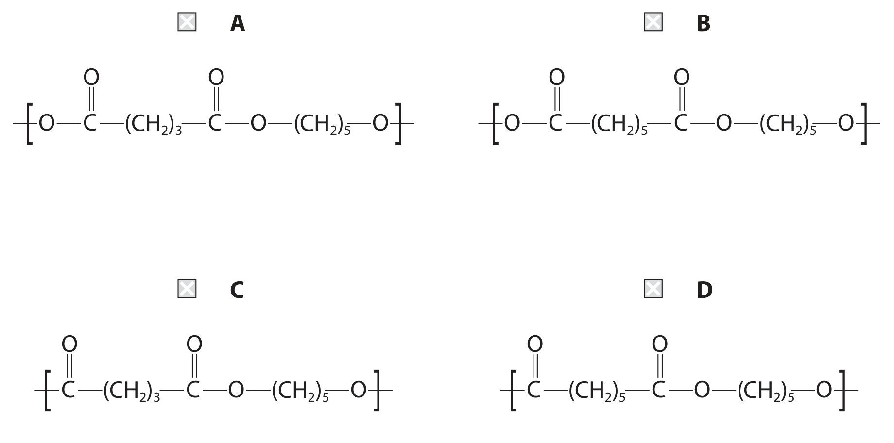
Show answer · 答案 + explanation
Answer: B. Condensation of a diol and a dicarboxylic acid forms ester links and eliminates water.
2026 May · U4A Q13 Which organic compound is formed when propanoyl chloride, \(\ce{CH3CH2COCl}\), reacts with concentrated ammonia?
A propanamide
B propanoic acid
C propylamine
D propyl propanoate
Show answer · 答案 + explanation
Answer: A. Acyl chloride plus ammonia gives the primary amide, with \(\ce{NH4Cl}\) also formed.
2026 May · U4A Q14 What are the products of the acid hydrolysis of ethyl propanoate?
A propanoate ions and ethanol
B sodium propanoate and ethanol
C propanoic acid and ethanol
D propanoic acid and ethene
Show answer · 答案 + explanation
Answer: C. Acid hydrolysis gives the carboxylic acid and alcohol and is reversible.
2021 May · U4A Q9 The substance known as PHBV is a biodegradable polymer formed from 3-hydroxybutanoic acid and 3-hydroxypentanoic acid. Which of these is the repeat unit of the polymer?
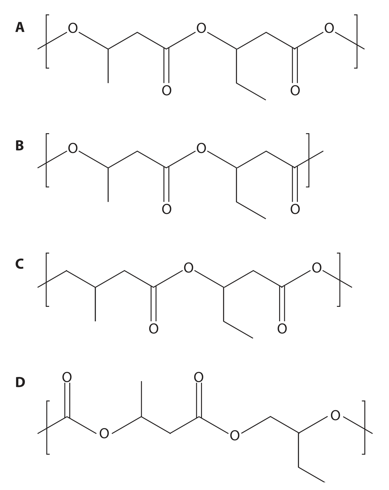
Show answer · 答案 + explanation
Answer: A. The repeat unit must contain the correct ester link and the carbon skeletons from both hydroxycarboxylic acid monomers.
2021 May · U4A Q10 Which reagent reacts at room temperature with methylamine, \(ce{CH3NH2}\), to form the compound N-methylethanamide?
A \(ce{CH3COCH3}\)
B \(ce{CH3COOH}\)
C \(ce{CH3COOCH3}\)
D \(ce{CH3COCl}\)
Show answer · 答案 + explanation
Answer: D. An acyl chloride reacts readily with an amine at room temperature to form an amide; the other options do not react sufficiently fast under these conditions.
2023 Jan · U4A Q14 The structure of an ester is shown. Which two compounds react to form this ester?
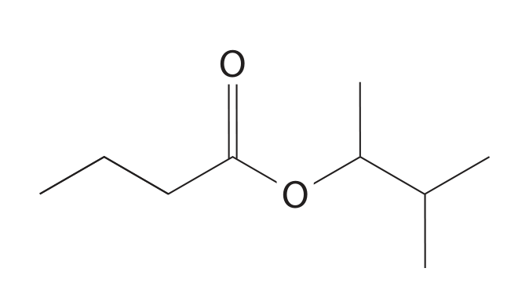
A butanoic acid and propan-2-ol
B butanoyl chloride and 3-methylbutan-2-ol
C propanoic acid and 3-methylbutan-1-ol
D propanoyl chloride and 2-methylbutan-2-ol
Show answer · 答案 + explanation
Answer: B. The acyl part is butanoyl and the alcohol part is 3-methylbutan-2-yl; these correspond to butanoyl chloride and 3-methylbutan-2-ol.
2023 May · U4A Q8 The two monomers shown react to form a polymer. Which is a repeat unit of the resulting polymer?
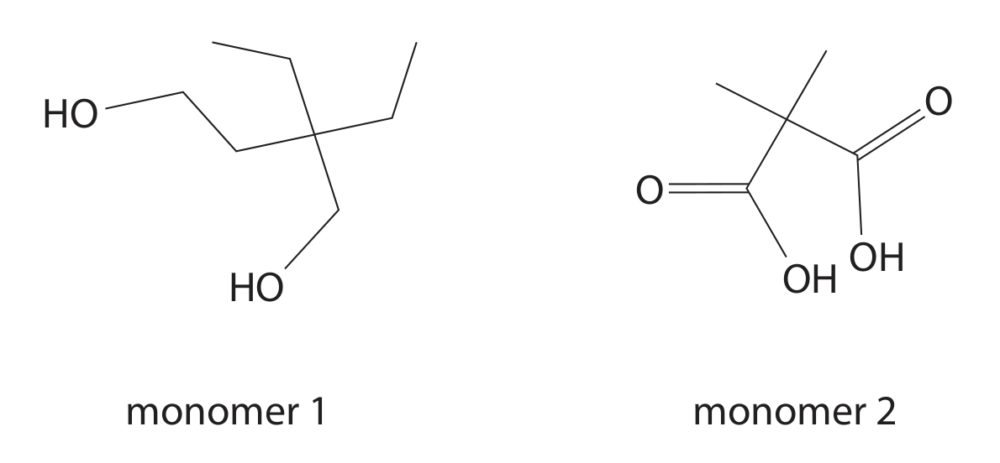
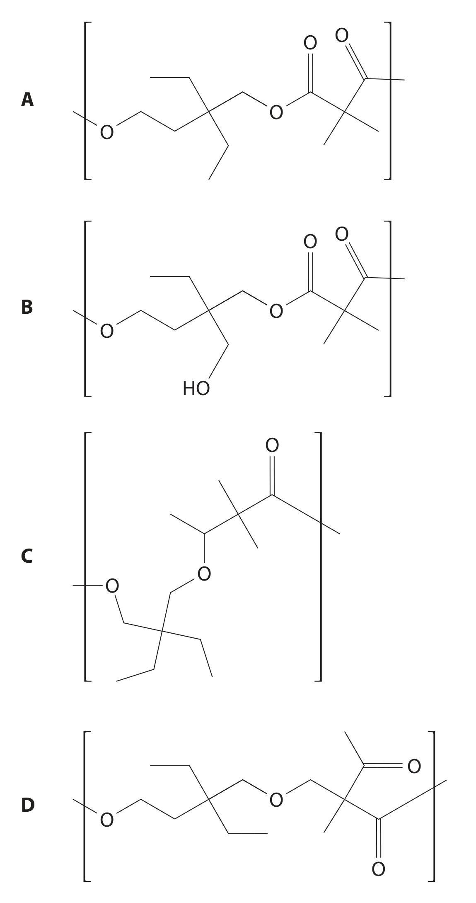
Show answer · 答案 + explanation
Answer: A. The correct repeat unit retains both monomer fragments and contains ester links formed by condensation.
2023 May · U4A Q9 A partial mechanism of the reaction between ethanoyl chloride and concentrated aqueous ammonia is shown.
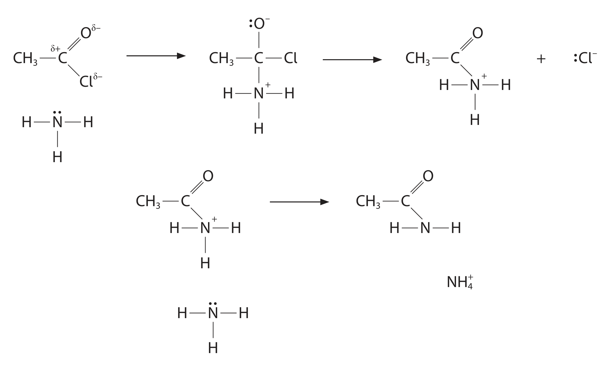
(a) How many curly arrows are needed to complete the mechanism?
A 4
B 5
C 6
D 8
(b) What is the IUPAC name for the organic product?
A amino ethanone
B ethanamide
C ethanoyl amine
D methanamide
Show answer · 答案 + explanation
Answer: (a) C; (b) B. Six electron-pair movements complete the nucleophilic acyl substitution mechanism, and the organic product is ethanamide.
2023 May · U4A Q10 How do the boiling temperature and the solubility in water of butanoic acid compare with the values for hexane?
| Boiling temperature | Solubility in water | |
|---|---|---|
| A | lower | lower |
| B | lower | higher |
| C | higher | lower |
| D | higher | higher |
Show answer · 答案 + explanation
Answer: D. Butanoic acid forms hydrogen bonds, giving a higher boiling temperature and greater water solubility than non-polar hexane.
2023 May · U4A Q11 Which acid would be produced by the hydrolysis of the molecule shown?
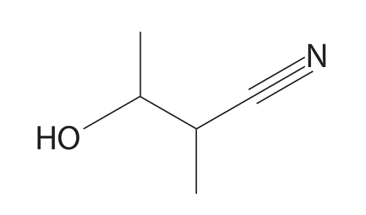
A 2-hydroxy-3-methylbutanoic acid
B 3-hydroxy-2-methylbutanoic acid
C 3-hydroxy-2,3-dimethylpropanoic acid
D 4-hydroxypentanoic acid
Show answer · 答案 + explanation
Answer: B. Acidic hydrolysis converts the nitrile group to \(ce{-COOH}\) while retaining the carbon skeleton, giving 3-hydroxy-2-methylbutanoic acid.
2023 May · U4A Q12 Which is produced after the polyester shown is hydrolysed with excess sodium hydroxide?
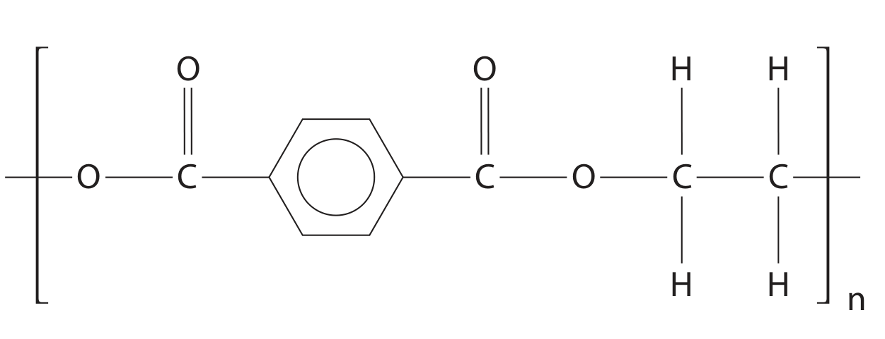
A benzene-1,4-dicarboxylic acid
B ethane-1,2-diol
C sodium ethanedioate
D water
Show answer · 答案 + explanation
Answer: B. Alkaline hydrolysis of the polyester releases the diol; the acid-derived part is present as a carboxylate salt.
2024 Jan · U4A Q12 From which two reactants could \(ce{CH3(CH2)2COO(CH2)4CH3}\) be made?
A butanoic acid and pentan-1-ol
B butanoyl chloride and pentan-2-ol
C pentanoic acid and butan-1-ol
D pentanoyl chloride and butan-2-ol
Show answer · 答案 + explanation
Answer: A. The acyl fragment is butanoate and the alkyl fragment is pentan-1-yl.
2024 Jan · U4A Q13 The reaction between ethanoic acid and lithium tetrahydridoaluminate(III) is best described as
A oxidation
B addition
C reduction
D substitution
Show answer · 答案 + explanation
Answer: C. \(ce{LiAlH4}\) reduces a carboxylic acid to a primary alcohol.
2024 May · U4A Q12 An ester is hydrolysed in excess dilute hydrochloric acid to form ethanol and propanedioic acid. What is the skeletal formula of this ester?
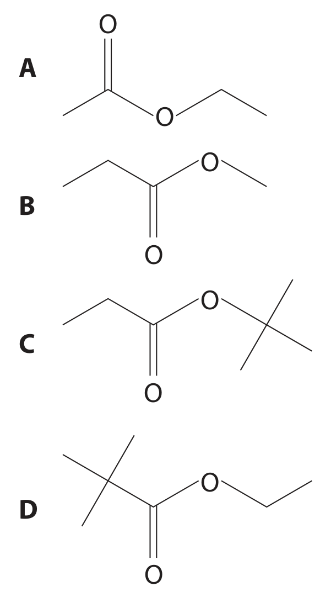
Show answer · 答案 + explanation
Answer: A. Acid hydrolysis gives propanedioic acid and ethanol, so the ester must contain the propanedioate group esterified with ethanol.
2024 May · U4A Q14 The high-resolution \(^1\)H NMR spectrum of an ester is shown. What is the skeletal formula of this ester? Use the Data Booklet as a source of data.
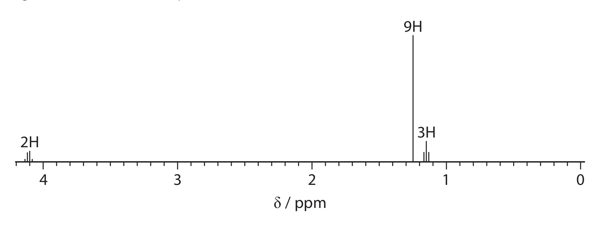
A methyl propanoate
B ethyl ethanoate
C tert-butyl ethanoate
D ethyl 2-methylpropanoate
Show answer · 答案 + explanation
Answer: D. The signal integration and chemical shifts are consistent with an ethyl group and a branched alkyl group attached to the ester.
2024 Oct · U4A Q1 An ester has the structure shown. Which pair of reactants would form this ester, under suitable conditions?
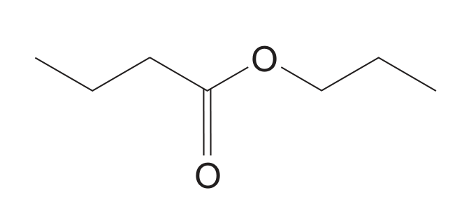
A butanoic acid and propan-2-ol
B butanoyl chloride and propan-1-ol
C propanoic acid and butan-1-ol
D propanoyl chloride and butan-2-ol
Show answer · 答案 + explanation
Answer: B. The structure contains the butanoyl group and a propan-1-yl alcohol-derived group.
2026 Jan · U4A Q12 The diol reacts with ethanedioic acid to form a polyester. What is the structure of the repeat unit of this polyester?
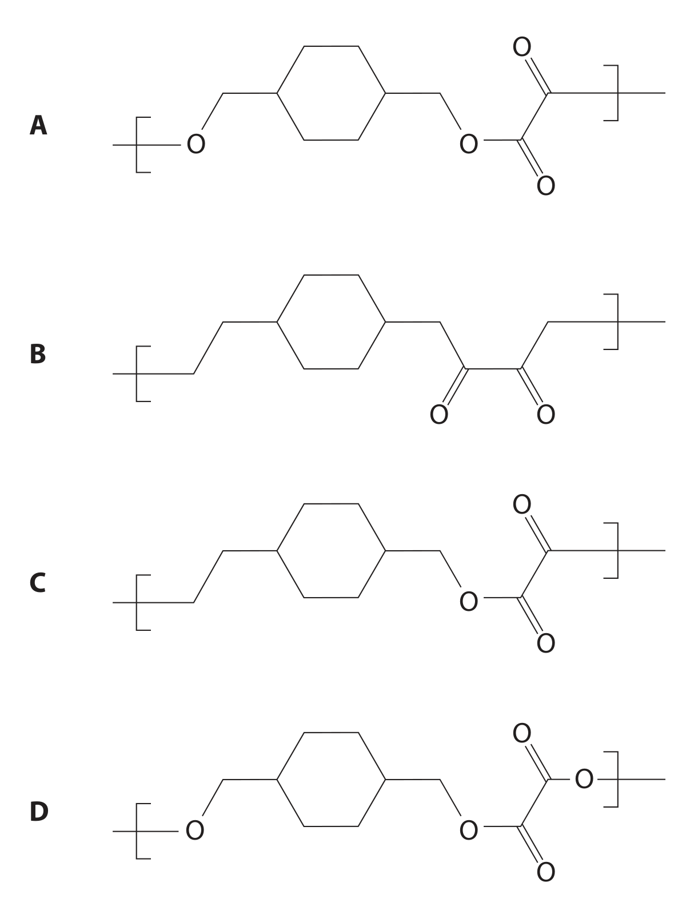
Show answer · 答案 + explanation
Answer: A. The repeat unit must contain the diol fragment joined to the ethanedioate fragment through two ester links.
2025 Oct · U4AA Q11 The substance known as PHBV is a biodegradable polymer formed from 3-hydroxybutanoic acid and 3-hydroxypentanoic acid. Which of these is the repeat unit of the polymer?
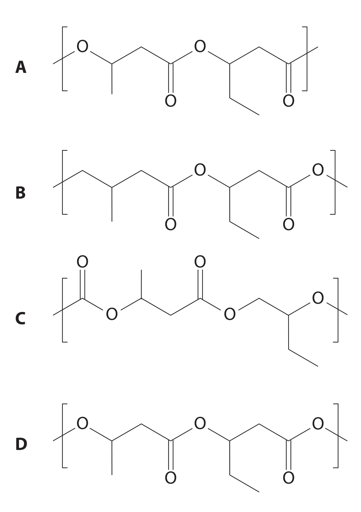
Show answer · 答案 + explanation
Answer: A. The repeat unit must preserve the two hydroxycarboxylic-acid carbon skeletons and the ester-link arrangement.
2025 Oct · U4AA Q12 Which reagent reacts at room temperature with methylamine, \(ce{CH3NH2}\), to form N-methylethanamide?
A \(ce{CH3COCH3}\)
B \(ce{CH3COOH}\)
C \(ce{CH3COOCH3}\)
D \(ce{CH3COCl}\)
Show answer · 答案 + explanation
Answer: D. Ethanoyl chloride is sufficiently reactive to undergo nucleophilic acyl substitution with methylamine at room temperature.
Additional complete 15C / 15D questions
以下补入前一版遗漏的完整题目；题图来自 extracted_figures/*/adjusted 的独立裁图。
2023 October · U4A Q10 This question is about the reaction scheme shown.
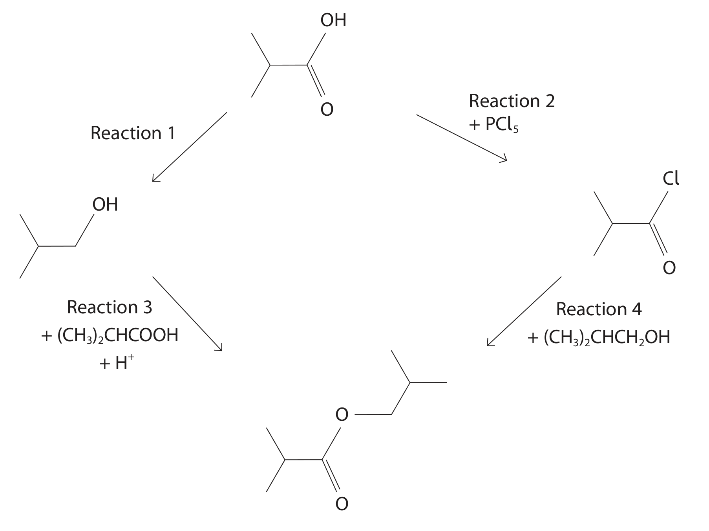
(a) Which reagent is required for Reaction 1?
A acidified potassium dichromate(VI)
B concentrated sulfuric acid
C hydrogen with a nickel catalyst
D lithium tetrahydridoaluminate(III)
(b) Reaction 1 has a yield of 90 %. What mass of 2-methylpropanoic acid is required to produce 6.66 g of 2-methylpropan-1-ol? [\(M_r\) values: 2-methylpropanoic acid = 88; 2-methylpropan-1-ol = 74]
A 6.22 g
B 7.13 g
C 7.92 g
D 8.80 g
(c) Which condition is essential for Reaction 2?
A acid catalyst
B anhydrous
C high temperature
D ether solvent
(d) Reactions 3 and 4 produce the same ester. Which is an advantage of using Reaction 4 to produce this ester in the laboratory?
A it can be carried out at room temperature
B it requires a catalyst
C the atom economy is higher
D hydrogen chloride is a product
Show answer · 答案 + explanation
Answers: (a) D; (b) D; (c) B; (d) A. Reaction 1 reduces the carboxylic acid with \(\ce{LiAlH4}\). For (b), allow for the 90% yield when converting product mass to required reactant mass. Reaction 2 with \(\ce{PCl5}\) requires anhydrous conditions. Reaction 4 uses an acyl chloride and proceeds at room temperature.2023 October · U4A Q11 Which diagram shows two repeat units of the polymer formed by the polymerisation of propane-1,3-diol and benzene-1,4-dicarboxylic acid?
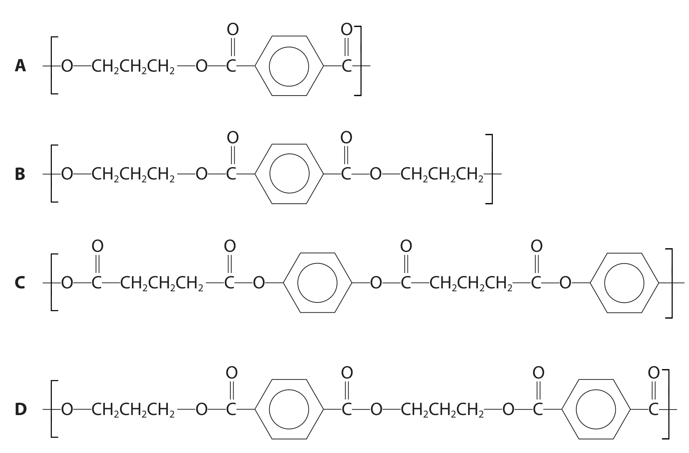
Show answer · 答案 + explanation
Answer: D. A polyester repeat unit must contain both the diol section, \(\ce{-OCH2CH2CH2O-}\), and the benzene-1,4-dicarboxylate section, joined by ester links with continuation bonds.2025 May · U4A Q2 Which of these statements about the reaction of ethanoyl chloride with ammonia is not correct?
A an amide is formed
B the reaction is exothermic
C misty fumes and white smoke are given off
D a gas is produced that turns damp red litmus paper blue
Show answer · 答案 + explanation
Answer: D. Ethanoyl chloride reacts with ammonia to form ethanamide and ammonium chloride; no gas that turns damp red litmus paper blue is produced.Exam checklist
Source note
本页面对应：Note per Chapter/Note per Chapter/4.8 Organic Chemistry Carboxylic Acids.pdf.pdf；考纲范围对应 International-A-Level-Chemistry-Spec 的 15C: Carboxylic acids（15.9–15.12） 和 15D: Carboxylic acid derivatives（15.13–15.16）。页面中的示意图均从本章 note 独立提取并保存到 assets/notes/carboxylic-acids/，便于单独放大和复用。